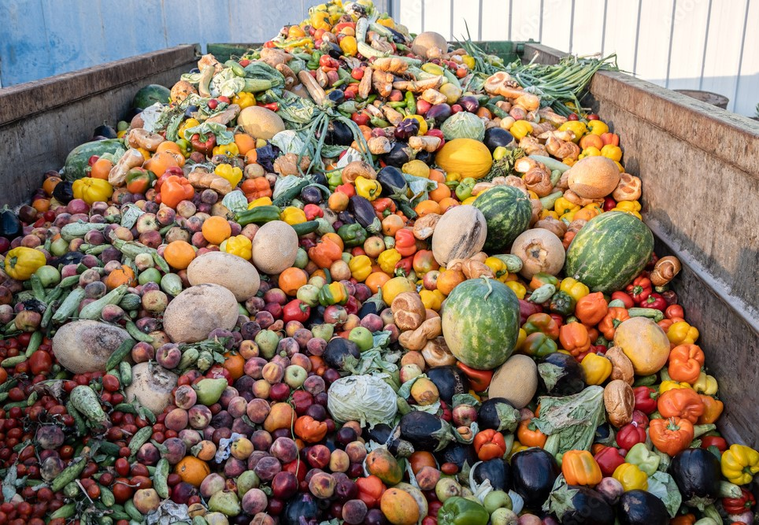
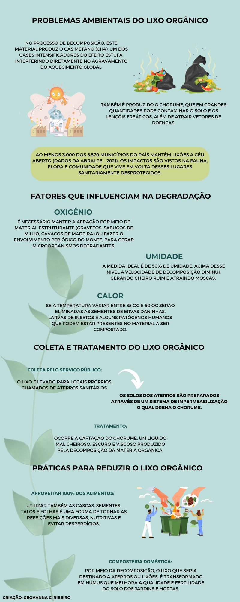

O lixo orgânico ou resíduo orgânico é caracterizado por todo material de origem biológica, proveniente da vida vegetal ou animal, gerado nas residências. No Brasil, uma pessoa produz diariamente cerca de um quilo de resíduos. Mais da metade disso é matéria orgânica, e a destinação nem sempre ocorre de forma adequada. Esse tipo de resíduo tem uma grande capacidade de reaproveitamento e reciclagem. Porém, quando descartado de maneira incorreta traz negativos impactos sociais e ambientais.
Ao se decompor o lixo orgânico libera gás metano, grande contribuinte no aquecimento global, e chorume, que em grandes quantidades pode contaminar o solo e os lençóis freáticos, além de atrair vetores de doenças. Vale notar que no mundo, bilhões de toneladas de lixo orgânico são produzidas diariamente. Para tanto, a reciclagem do lixo orgânico é de suma importância e pode estar relacionada com o processo de compostagem e ainda com a produção de energia.
